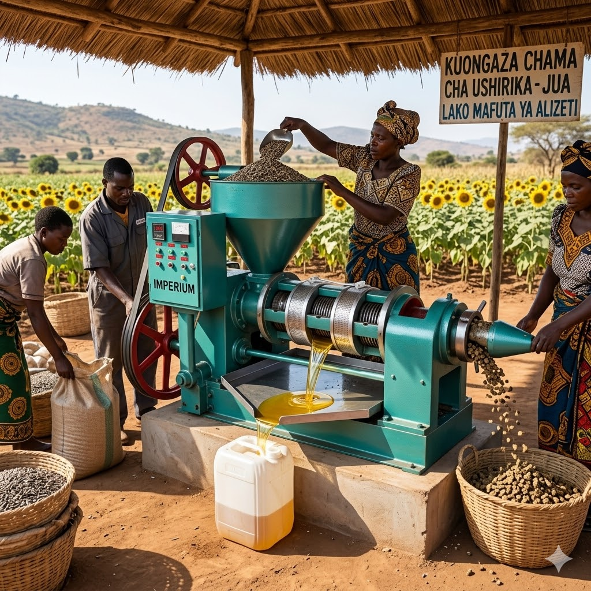

Bridging the energy gap with high-efficiency machinery for Zambian entrepreneurs. Whether it’s preserving your harvest with cold chain tech or building the future in a solar-powered welding shop, we provide the tools to increase your productivity. Explore our range of machines and full specifications below.

Click any card to see images, full specifications, inputs/outputs, and community impact. Filter by category below.
Grain milling, oil extraction, feed mixing, food processing, and solar irrigation solutions for high-ROI rural enterprises.
Preserve produce longer, reduce post-harvest losses, and unlock higher-value markets — including solar dryers, dehumidifiers, and water ATMs.
Tools for rural fabrication, repair, light manufacturing, garment production, poultry, and carpentry — creating skilled jobs and supporting local enterprises.
Entry-level productive appliances for food vendors, clean cooking transition, and rural e-mobility services.
The Zambia Technology Roadshow brings together leading organisations in energy access, agriculture, finance, and rural development.
Speak with a technology advisor at the Roadshow. Live demonstrations available.
📞 Inquire Now